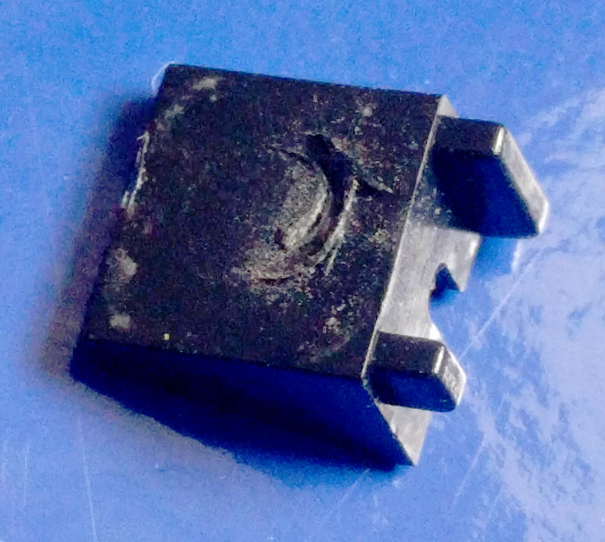

blog.jamesbaber.co.uk
Repair of a Flip Ultra HD.
Putting newly acquired skills to good use. Ten years late.
Acquisition
The first images I can find from this camera on my NAS are dated 2009, which may be when I received this camera as a gift. Alternatively, I didn't set the date correctly, which is likely as the Flip Ultra HD takes 2 AA batteries which are perfect for fiddling.Like most cameras, it has a 1/4" 20 TPI tripod mount, except this mount has a design flaw. Instead of a blind fully metallic threaded insert, the designers chose to use a through-tapped insert with a plastic end-stop. Not very DIY-bike-handlebar-mount™ friendly.
Downfall
As you can see in the following photo, the end stop was no match for my younger self's ineptitude. When the end stop was pushed inwards by the excessively long tripod mount screw, it pivoted up about the single screw and wiped a diode and resistor off the PCB, as we will see later.
He's dead Jim.
At the time of the incident, a friend of a relative managed to get the camera working again, but with a catch. While it would power on and begin to record, after a couple of seconds it would lock up and stop responding to button presses.
Ah well. It's outdated technology anyway.
The little Flip camera sat in the same desk drawer for the entirety of my time in secondary school, sixth form and half a degree.
In that time, I've self-taught myself basic PCB design and hand-assembled multiple boards with 0603 parts and 28-pin QFNs.
The Flip emerges from the drawer once again!
Second repair - ten years later
Following the iFixit guide, 7 screws were removed and the main board was freed.The front of the PCB contains a single Samsung KMCMG0000M NAND flash chip which makes up the 8 GB of internal, non-expandable, storage capacity. Another much lower capacity flash memory chip is also present, presumably for storing the camera firmware.
Flipping the board over and whipping out the microscope reveals the site of the damage. It appears that the previous repairer got the Schottky diode back in place successfully, but not the resistor.
Inside the case, we can see the back of the tripod mount, directly below the site of the damage. There's less than a millimetre of clearance between the tripod mount and components on the PCB. The EMI gasket (centre tap from the 2x AA batteries) is also somewhat misshapen.
0402 resistors tend not to be labelled so measurements must be made to determine their values. Ideally, they would be measured out of circuit but I'm not that patient.
At this level of magnification, the silkscreen resembles cake icing. Shame it doesn't taste like icing.
I measured all the nearby resistors and made a quick map of the rough values.

While the missing component may be a unique value, it's more likely to be a part of one of the surrounding groups. First I tried a 12 kΩ resistor but no dice. The measured value in and out of circuit was the same, so I determined that the connected circuit likely didn't burden the previous measurements. Next, a 24.9 kΩ resistor leftover from my PoE projects was installed to great success!
The 0603 part was installed sideways to aid soldering. Unfortunately, due to the aforementioned lack of clearance above this area, I can't leave the 0603 part in place. It must be replaced with the correct 0402 part.
Also note the straightened diode.
I'm not going to go to the effort of determining exactly what the original component was but it can be approximated as follows:
The maximum value of the 2% E48 28.7 kΩ is:
28.7 kΩ * 1.02 = 29.274 kΩ which doesn't fit all of the measured values but is a sensible midpoint.
The 30 kΩ 5% E24 option will easily cover the upper limit. Lower limit:
30 kΩ * 0.95 = 28.5 kΩ just about covers the range of measured values.
It's safe to assume that for this repair either of the mentioned values would work and additional precision is not needed.
The replacement part was fitted and, despite a small chip, works as expected. Instead of replacing the chipped part, I'll just make a note to be more careful next time!

There is definitely some excess solder present but it's perfectly serviceable. I also added an extra couple of layers of Kapton tape to the tripod mount and replaced the EMI gasket.
Conclusion
If I run out of projects to do during the COVID-19 lockdown then I may investigate the purpose of the missing resistor and try to work out why its absense had the effects it did.Maybe in another ten years?
Click here for a brief demo of the video and audio recording quality.